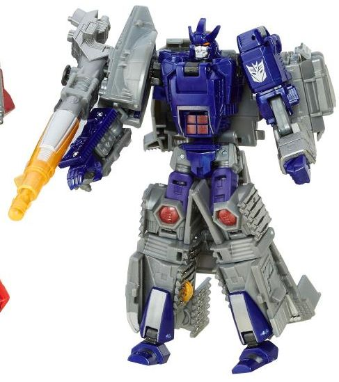
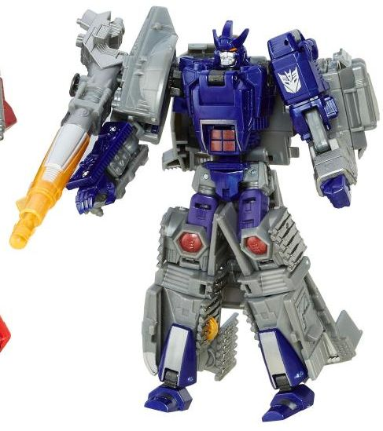
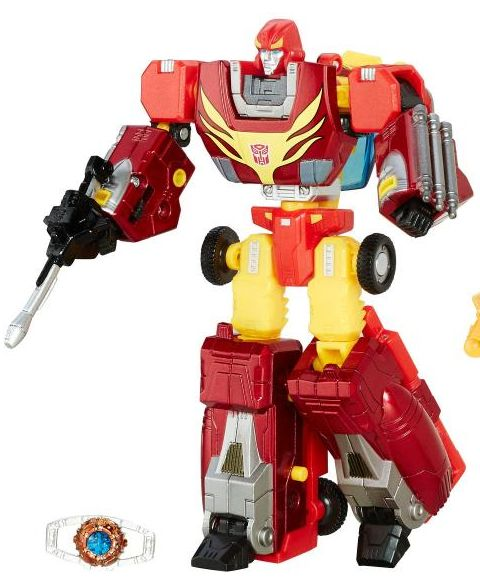

Allegiance : Decepticon
Size : Deluxe
Difficulty of Transformation : Very Hard
Color Scheme : Milky gray, dark glossy purple, and some transparent orange, dark metallic red, and silver
Individual Rating : 7.6
Set Price
: ~$55 U.S.
Overall Rating
: 8.2
(NOTE: Because this set is composed of repaints,
this is not a full-blown review. This mainly covers any changes made to
the set and the color scheme, and merely compares it to the original versions
of these molds. For a review on the original release of Universe 2.0 Galvatron,
go
here
. For a review on the original
Titanium 6" Rodimus Prime release, go
here
.)
 Galvatron
Galvatron

Allegiance
: Decepticon
Size
: Deluxe
Difficulty of Transformation
: Very
Hard
Color Scheme
: Milky gray, dark glossy
purple, and some transparent orange, dark metallic red, and silver
Individual Rating
: 7.6
Here's a mold I never
thought I'd see again. Universe 2.0 Galvatron has been redecoed... kinda.
The same basic color scheme is here, but it's been changed a bit to more
accurately represent Galvatron's toon colors-- at least some. The gray
is more of a straightforward, milky gray this time, as opposed to being
tinted a shade of blue as on the original Universe 2.0 toy. The purple
has definitely gotten an upgrade, and is now a gorgeous dark glossy, semi-metallic
color. Red is still here, but it's used less and is a metallic shade now--
used only on his abs, knees, and eyes. Silver is used on a few places,
like on the vents and front bits of his tank mode, as well as on the sides
of his gun (both on the sides of the transparent orange portion and on
the sides of the top). It's also used on his robot face, Movie Decepticon
symbol on his shoulder (for some reason), and on stripes on his lower legs.
The paint apps are a bit barren compared to his original version in tank
mode, though-- his treads are completely unpainted this time, and there's
no military-esque markings, either. The light red bits in his robot mode
are gone, replaced with gray, and his upper legs are now purple instead
of gray. Other than these minor changes, the color breakup is mostly the
same.
No mold changes have
been made to this version of Galvatron.
 Rodimus
Prime
Rodimus
Prime

Allegiance
: Autobot
Difficulty of Transformation
: Medium
Color Scheme
: Moderately light red,
light orange, metallic red, silver, and some black, transparent dark blue,
light bluish gray, light blue, and pale yellow
Individual Rating
: 8.9
Here's ANOTHER mold I
never thought I'd see again-- a redeco of the 6" Titanium toy this many
years later I was certainly NOT expecting. Regardless, as with Galvatron,
Rodimus Prime here keeps the basic color scheme and layout of the prior
version, but tweaks some of the shades and paint apps. The red plastic
is a bit lighter here than on the original, though the diecast is painted
a rather nice metallic red that looks pretty good, though it clashes a
bit with the regular red, since there isn't any real rhyme or reason behind
the red color changes other than "these parts are diecast and these parts
aren't". The orange on this version is a bit lighter, which I think helps
with the contrast a bit. Silver is definitely more prominent on this version,
with silver added to the lower arms as well as the lower legs, as well
as all the other places like the tailpipes, face, and whatnot that it was
already used on on the previous toy. Rodimus Prime's flames have, unfortunately,
been greatly reduced on this version, only sticking to the cab front/robot
chest in a more G1-esque style, compared to the great billowing flames
all over the vehicle mode on the original. This definitely takes the vehicle
mode down a notch, in my opinion. Black is now used on the middle of the
lower legs, compared to the silver of the original, but it all means roughly
the same color breakup down there.
No mold changes have
been made to this version of Rodimus Prime, though he does come with a
Matrix of Leadership accessory that's basically the same as that which
comes with
Masterpiece Optimus Prime 2.0
.
However, neither toy in this set can actually HOLD the darn thing, so...
it's not really that useful.
The "Rise of Rodimus
Prime" set probably didn't make it stateside (except for a few online retailers)
for a reason. Like pretty much all Platinum Edition sets, it's overpriced
for what you get, and although Rodimus Prime is a pretty good mold, the
original had a better paint job. Galvatron is just not a great mold overall,
and is overly complicated as well. Both have had larger, better versions
done of them by now, so only completists even need to consider this set.
Reviews by Beastbot
(Pics from Hasbro .)